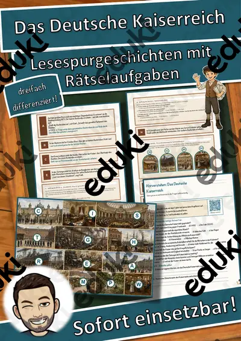
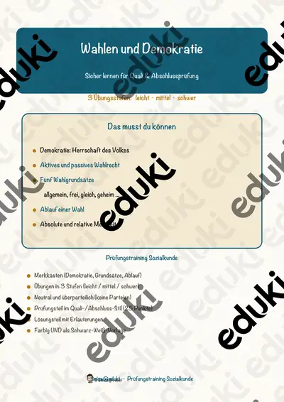
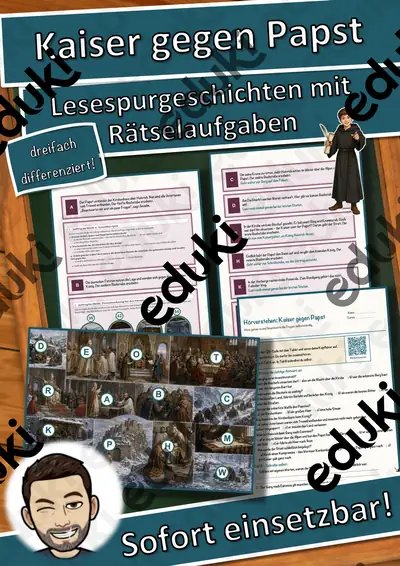

Die Novemberrevolution 1918 – vom Kaiserreich zur Demokratie – Lesespurgeschichte mit Rätselaufgaben (Klasse 9)
Die Novemberrevolution 1918 – vom Kaiserreich zur Demokratie – Lesespurgeschichte Geschichte (Klasse 9)Schick deine Klasse auf eine Lesespur durch eine Sonderausstellung im Stadtmuseum! Ich-Erzählerin Mira will mit Ben herausfinden, ob der Kaiser 1918 wirklich freiwillig ging – Museumspädagoge Herr Albers begleitet sie, Maskottchen ist die Taschenuhr Ticko. Von der Eingangshalle über Hafenmodell, Zeittafel, Rätesaal, Balkon, Wahllokal und Frauenecke bis in den Lesesaal führt der Weg. Am Ende jedes Abschnitts verrät ein Hinweis den nächsten Ort auf dem Plan – nur wer genau liest, findet den Weg und sammelt alle geheimen Buchstaben zum Lösungswort.
Die passende Lesespur für Geschichte in Klasse 9 (auch 8 und 10) – ideal rund um den 9. November zum Ende des Ersten Weltkriegs und zum Beginn der Weimarer Zeit, für Stationenlernen oder Vertretungsstunden. Ohne Parteinamen. Ohne Marken. Geeignet für Mittelschule, Realschule, Gymnasium und Gesamtschule. Das Material ist SOFORT EINSETZBAR und in DREI DIFFERENZIERUNGSSTUFEN (leicht ★ / mittel ★★ / schwer ★★★) angelegt.WICHTIG: Das komplette Material ist sowohl in FARBE als auch in SCHWARZ-WEISS enthalten – ideal zum Sparen von Druckkosten.DAS IST ENTHALTEN
- Lesespurgeschichte in 3 Niveaus (leicht, mittel, schwer)
- farbiger Plan der Ausstellung als Suchkarte
- Hörverstehen mit QR-Code zur MP3 (selbstständiges Hören mit Kopfhörern)
- vier Aufträge auf dem Weg: eine Zuordnung, eine Rechenaufgabe an der Zeittafel, ein Quiz und ein Steckbrief
- Rätselseite (Wörter-Suchsel + Rätselfragen rund um die Novemberrevolution)
- Ausmalbild zum Thema
- ausführliches Lösungsblatt für die Lehrkraft mit allen Lösungen (Lesespur, Aufträge, Hörverstehen, Rätselseite)
- alles zusätzlich als komplette Schwarz-Weiß-VarianteSO GEHT DIE LESESPURDie Schülerinnen und Schüler lesen ab START, finden im Text den nächsten Ort, suchen ihn auf dem Plan und lesen bei dieser Station weiter. An jeder richtigen Station gibt es einen Buchstaben. Eingeplante Sackgassen (Garderobe, Museumscafé, Aufzug, Museumsladen) sind keine Stationen und dienen der Selbstkontrolle. Am Ende werden die gesammelten Buchstaben umgestellt und ergeben ein geheimes Lösungswort. (Die Lösungen sind selbstverständlich nur im Lösungsblatt für die Lehrkraft enthalten.)INHALTLICHER SCHWERPUNKTKriegsmüdigkeit und Hunger im Herbst 1918, der Matrosenaufstand in Kiel, Arbeiter- und Soldatenräte, der 9. November 1918 mit Abdankung des Kaisers und Ausrufung der neuen Staatsform, Ende der Monarchie in Bayern, Waffenstillstand am 11. November, Frauenwahlrecht und Wahlalter 20, die Wahl zur Nationalversammlung 1919 und die Verfassung von Weimar.ABGEDECKTER LEHRPLAN (Klasse 9)
- Geschichte – Ende des Ersten Weltkriegs, Novemberrevolution und Beginn der ersten deutschen Demokratie (LehrplanPLUS Bayern Mittelschule GPG 9).
- Mathematik – Prozentrechnung und Rechnen mit Jahreszahlen.
- Deutsch – Sachtexte sinnentnehmend lesen; einem Hörtext gezielt Informationen entnehmen (Hörverstehen mit MP3).Geeignet für Freiarbeit, Stationenlernen, Vertretungsstunden, Wochenplan und als Einstieg ins Thema.
Ähnliche Materialien

Das Deutsche Kaiserreich – Lesespurgeschichte mit Rätselaufgaben (Klasse 8)

Deutsches Kaiserreich Lückentext mit Wortspeicher Hörverstehen und Suchsel

Demokratie Lückentext mit Wortspeicher Hörverstehen und Suchsel

Wahlen und Demokratie – Prüfungstraining Sozialkunde (Klasse 9)

Materialpaket Parteien im Bundestag - Politik - Demokratie Deutschland -Bundestagswahl 2025 #demokratiestärken

Kaiser gegen Papst – Lesespurgeschichte mit Rätselaufgaben (Klasse 7)

Kaiser Lückentext mit Wortspeicher Hörverstehen und Suchsel